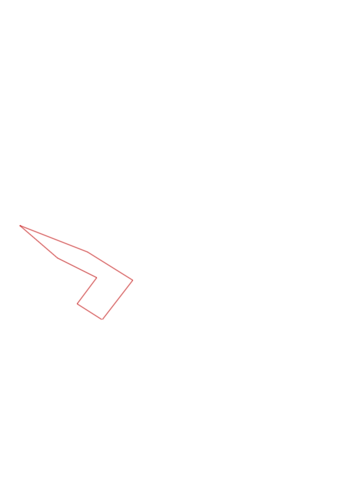
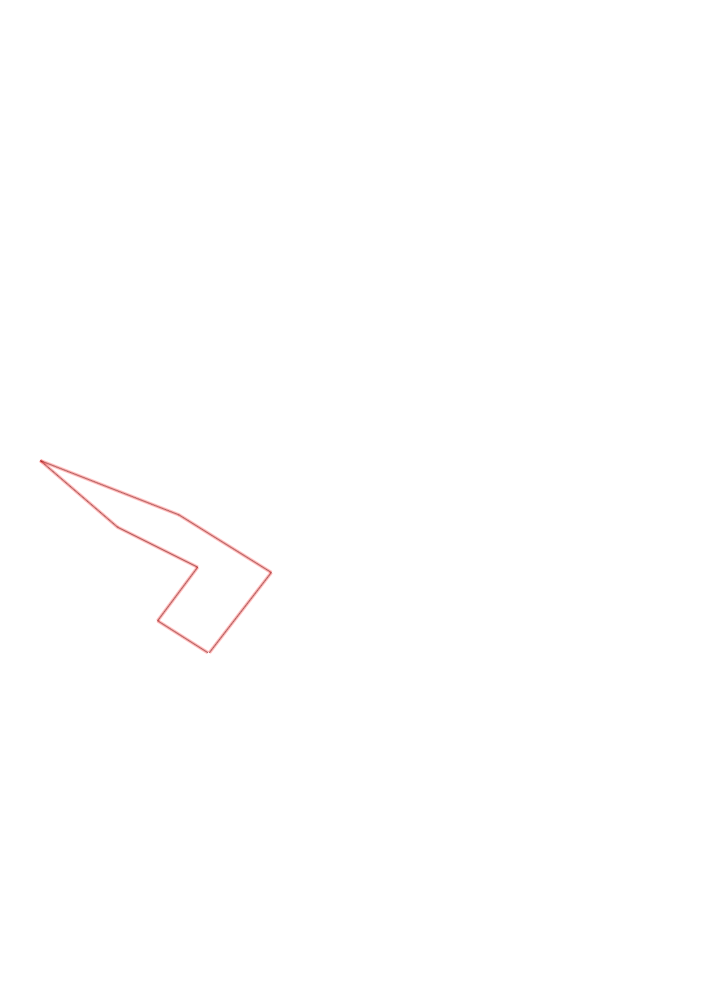

| Control |
Points |
Time Punched |
Distance |
Your Time |
Pace |
Place |
Fastest Time |
Median Time |
% Behind Fastest |
| 35 |
30 |
|
0.27 |
0:01:37 |
05:59 |
9 / 17 |
0:01:07 |
0:01:37 |
44% |
| 51 |
50 |
|
0.3 |
0:03:31 |
11:43 |
9 / 12 |
0:02:01 |
0:03:06 |
74% |
| 72 |
70 |
|
0.4 |
0:04:20 |
10:50 |
2 / 3 |
0:03:04 |
0:04:20 |
41% |
| 92 |
90 |
|
0.46 |
0:31:09 |
1:07:43 |
11 / 11 |
0:03:10 |
0:04:02 |
883% |
| 58 |
50 |
|
0.66 |
0:06:40 |
10:06 |
1 / 1 |
0:06:40 |
0:06:40 |
0% |
| 41 |
40 |
|
0.49 |
0:05:47 |
11:48 |
4 / 4 |
0:03:39 |
0:04:05 |
58% |
| Finish |
0 |
|
0.45 |
0:05:44 |
12:44 |
3 / 3 |
0:02:28 |
0:04:23 |
132% |
Total Distance Covered: 3.03km
Points Scored: 330
Late Penalty: 0
Final Score: 330
Total Time: 0hours 58minutes 48seconds
Efficiency: 108.91 points/km
 
